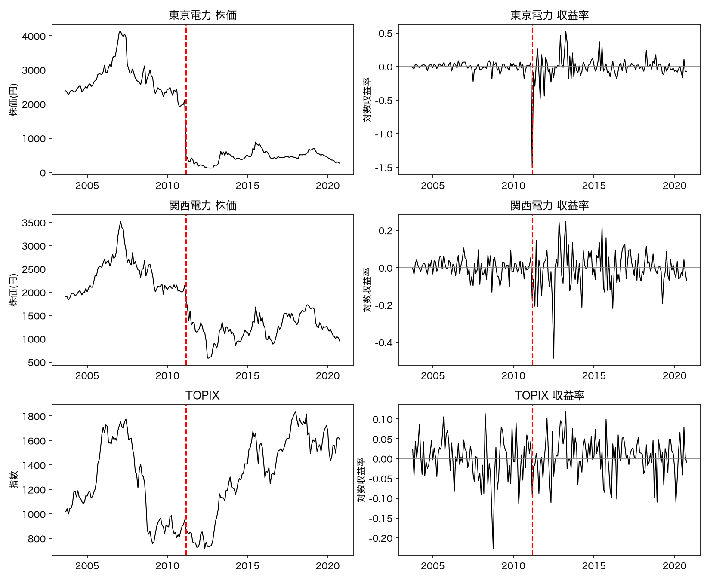
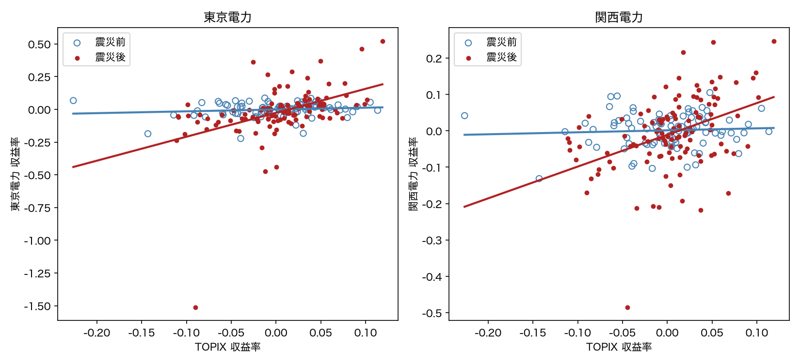

東京電力・関西電力のマーケットモデルの比較（2003年10月〜2020年10月、月次）
問い 2011年3月11日を境に、電力株と株式市場全体（TOPIX）の関係は変わったか。
結果 市場感応度（ベータ）は、東京電力で 0.14 → 1.83、関西電力で 0.05 → 0.87 へ上昇した。構造変化なしの帰無仮説は両社とも1%水準で棄却される。
解釈 震災前は市場とほぼ連動しなかった電力株が、震災後は通常の株式に近い性質を持つようになった。被災していない関西電力にも同じ変化が出ており、電力業界全体の変化と読める。
TOPIX、東京電力（TKYD）、関西電力（KNSD）の月次株価（2003年9月〜2020年10月、206か月）を使用した。欠損と月の欠落はない。TOPIX は指数（ポイント）、株価は円で単位が異なるため、対数差分で月次収益率に変換した。単位が消えて比較でき、株価の水準をそのまま回帰したときの見せかけの回帰も避けられる。
収益率は 2003年10月〜2020年10月の205個で、2011年3月を含む第90番目以降の116か月を「震災後」、それ以前の89か月を「震災前」とした。震災当日を含む2011年3月の収益率はすでに震災の影響を受けているため、震災後に含めた。

2011年3月の東京電力は前月比 −78%（2,114円→466円）で、標本中で突出している。震災後の収益率の標準偏差は、東京電力が0.054から0.197へ、関西電力が0.046から0.102へ拡大した一方、TOPIX は0.054から0.048でほぼ不変だった。
株式収益率 y を市場収益率 x で説明するマーケットモデルに、震災後ダミー d（震災後=1）と交差項 d·x を加えた。
y = α + γd + βx + δ(d·x) + u
震災前の傾きは β、震災後は β + δ である。γ は切片（平均水準）の変化、δ は傾き（市場感応度）の変化を表す。期間を分けて別々に回帰すると2つのベータは得られるが、その差が偶然かを検定できない。ダミーで1本の式にまとめると、差 δ が係数として推定され、標準誤差と検定が得られる。
| 東京電力 | 関西電力 | |||||
|---|---|---|---|---|---|---|
| 説明変数 | 構造変化なし | 完全モデル | 縮約モデル | 構造変化なし | 完全モデル | 縮約モデル |
| 定数項 α | −0.0129 | −0.0013 | ― | −0.0044 | 0.0014 | ― |
| 震災後ダミー γ | ― | −0.0248 | −0.0261 * | ― | −0.0123 | −0.0110 |
| TOPIX β | 0.9857 *** | 0.1388 | ― | 0.4642 *** | 0.0544 | ― |
| 交差項 δ | ― | 1.6914 *** | 1.8302 *** | ― | 0.8188 *** | 0.8732 *** |
| 修正済み決定係数 | 0.1029 | 0.1790 | 0.1860 | 0.0775 | 0.1372 | 0.1450 |
構造変化はある。構造変化なしのモデルとの Chow 検定（γ = δ = 0）は、東京電力で F(2,201) = 10.40（p = 0.00005）、関西電力で F(2,201) = 8.03（p = 0.00044）となり、両社とも1%水準で棄却された。
変わったのは傾きで、切片ではない。完全モデルで交差項 δ は両社とも1%水準で有意だが、震災前のベータ β（0.14、0.05）と切片ダミー γ は有意でない。震災後のベータは β + δ で、東京電力 1.83、関西電力 0.87 となる。期間別に推定しても同じ値が得られる。
モデル選択。修正済み決定係数の上位7モデルはすべて交差項を含み、含まないモデルより明確に高い（東京電力で0.17前後 対 0.10前後、関西電力で0.14前後 対 0.08前後）。AIC による前進ステップワイズ選択でも、両社とも交差項のみが選ばれた。

震災後は誤差分散が大きく変わっており（東京電力で13.5倍、関西電力で5.0倍。完全モデルの残差の Breusch-Pagan 検定は両社とも p ≈ 0.03 で均一分散を棄却）、通常の標準誤差に基づく結論はそのままでは信頼しにくい。系列相関は問題ない（Durbin-Watson ≈ 2.00、Breusch-Godfrey p > 0.7）。そこで、次の確認を行った。
| 交差項 δ の確認 | 東京電力 δ | p値 | 関西電力 δ | p値 |
|---|---|---|---|---|
| 通常の標準誤差 | 1.691 | <0.001 | 0.819 | <0.001 |
| White（不均一分散に頑健） | 1.691 | 0.003 | 0.819 | <0.001 |
| Newey-West（4次） | 1.691 | 0.003 | 0.819 | <0.001 |
| 2011年3月を除外（n = 204） | 1.199 | <0.001 | 0.789 | <0.001 |
| 2011年3〜12月を除外（n = 195） | 1.170 | <0.001 | 0.809 | <0.001 |
暴落月を除くと東京電力の δ は縮む（1.69 → 1.20）ため、推定値の大きさの一部はこの1点に依存する。ただしベータの上昇そのものは残る。
切片ダミー γ は頑健標準誤差では有意でなくなる（縮約モデルの東京電力で t = −2.03 → −1.40）。震災後に平均収益率が恒常的に下がったとは言えず、株価水準の低下は震災直後の一度きりの暴落として現れたと読める。
断点を2011年3月から前後にずらすと、完全モデルの修正済み決定係数は、東京電力で1月0.180、2月0.180、3月0.179、4月0.108となる（関西電力は3月0.137、4月0.123）。2011年3月を震災後に含める設定が妥当だと確認できた。
震災前の電力会社は、地域独占と総括原価方式のもとで収益がほぼ保証され、景気の影響を受けにくかった。株式でありながら債券に近い性質を持ち、市場とはほとんど連動しなかった（震災前の修正済み決定係数は東京電力で0.008、関西電力で負）。震災後は原発の停止と規制の見直しで収益の保証が揺らぎ、他の事業会社と同じく市場全体に感応するようになった。東京電力ではさらに、賠償や廃炉の負担で株式時価総額が負債に比べて小さくなり、財務レバレッジの上昇がベータを押し上げたと考えられる。東京電力の変化幅（+1.69）が関西電力（+0.82）の約2倍であることとも整合する。
これらは推定結果から導いた解釈であり、規制・レバレッジの効果を直接測定したものではない。
相関の分析であり、震災が原因だと厳密に示したものではない（欧州債務危機、政権交代、その後の相場環境の変化と時期が重なる）。被災していない関西電力にも同時に変化が出ていることや、断点を4月にずらすと説明力が落ちることから、震災が主要因である可能性は高いが、識別はしていない。震災後も修正済み決定係数は東京電力0.19、関西電力0.16にとどまり、電力株の変動の大半は市場では説明できない個別要因による。対象は2社に限られ、他の電力会社や原発を持たない公益企業との比較は未実施である。また株価には配当が含まれず、無リスク金利も引いていない。